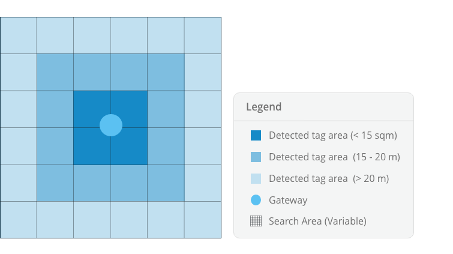
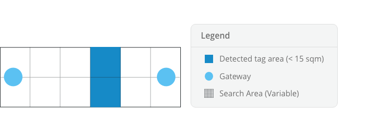
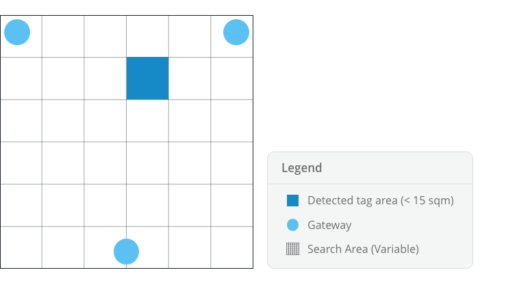
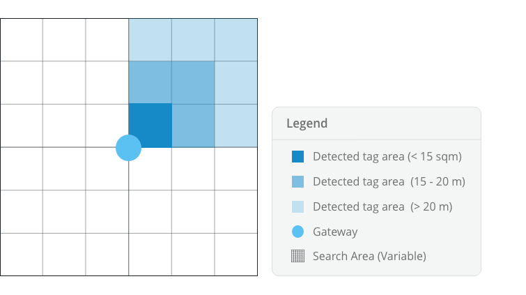
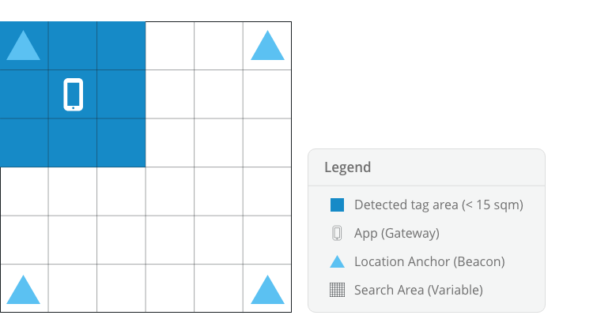

What level of location accuracy do you require?
Indoor & Outdoor tracking explained.
Outdoor location is most commonly determined by a method called GPS (Global Positioning System) which requires a connection with 3+ Satellites, as global reference points, then performing a triangulation calculation to plot a local reference point using longitude and latitude. With a clear view of the sky GPS can provide sub 5 five meter location accuracy.
When tracking indoors we use RTLS (Real Time Location Systems).
Although the connection with reference points is similar, the architecture of these points may vary dependent on the level of accuracy required.
Iottag RTLS systems use Gateways, a Wireless device placed in any space to define a ‘zone’. The Gateways scans at a rate of 10 times per second (20 times faster than GPS) and detects electronic Asset Tag’s nearby. The Gateway pushes this data to the cloud which is received by Atlas location engine, calculated and plotted on a site map.
Improved location accuracy can be achieved by using two or more Gateways, combined with solution specific Atlas location engine algorithms.
See below an explanation of the architectural configuration options supported by Atlas.
Zone tracking
Zone Tracking is a term used to describe a configurable size tracking area.
Location accuracy – A single Gateway may provide sub 15m of location accuracy and extend to over 250m.
Cost – The costs include a single Gateway and Atlas Enterprise Location Engine license.
Benefits – Low cost, easy integration, environment and obstructions pose little threat to reliability. Often used to digitally fence an area, complimented by deeper logic and custom alerts.

Bilateration
Bilateration is a tracking method requiring two fixed Gateways simultaneously scanning for an Asset Tag to determine its distance from each other. This distance is calculated and plotted in a similar way to Zone Tracking.
Location accuracy – Bilateration method can further reduce the Zone Tracking search range to 5+ meter accuracy.
Cost – The cost includes two Gateways and Atlas Enterprise Location Engine license with an additional Data Pack to store live and audit data, as required.
Benefits – High accuracy, ideal for long narrow spaces, often used to detect assets in corridors, isles or a row of rooms.

Trilateration
Trilateration is a tracking method involving three fixed Gateways simultaneously scanning for an Asset Tag to determine its distance from each other.
Location accuracy – Trilateration method can reduce the search area to sub ~5m, it is typically used in large open-plan spaces with zero obstructions.
Cost – The cost includes three Gateways and Atlas Enterprise Location Engine license with an additional Data Pack to store live and audit data, as required
Benefits – Highest accuracy, most often used to track the path travelled by an individual assets.

Angle of Arrival (AoA / AoD)
Angle of arrival is a tracking method with similar architecture to Zone Tracking, with a modified Gateway the system can scan zones at a 90-degree beam angle, with up to four to offer 360 degrees of visibility.
Location accuracy – This method can reduce the search area of Zone Tracking by 75%, the Gateway is capable of dividing a Zone into quadrants or. This method is effective in any size space.
Cost – The cost includes a single Gateways and Atlas Enterprise Location Engine license with an additional Data Pack to store live and audit data, as required.
Benefits – Designed to reduce the search area in an open plan space by 75% and track asset travel direction, from arrival to departure.

Location Anchor
A Location Anchor is a Smart Beacon which defines an area or zone. The Smart Beacon communicates with Atlas App and SDK to determine its location indoor with high accuracy.
Smart devices such as Tablets or Phones are most commonly used to communicate with Smart Beacons allowing them to determine their location, (or other sensor data) where accurate GPS location fails. This method can also provide time-based information, specifically check-in and out events for mobile devices.
Location accuracy – The broadcast received by a Scanning device can be used to calculate Location accuracy at sub ~15m. Bilateration and Trilateration location methods are also possible with the correct architectural configuration. All methods are effective both indoors and out where there are minimal obstructions.
Cost – The costs are very low, requiring only a single battery powered Smart Beacon, Atlas App or SDK and Enterprise Location Engine license.
Benefits – Reliable and accurate indoor positioning for Smart devices, making asset tracking indoor possible and can be setup in hours.
